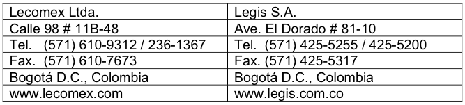

Most of Colombia’s duties have been consolidated into three tariff levels: 0 percent to 5 percent on capital goods, industrial goods, and raw materials not produced in Colombia; 10 percent on manufactured goods, with some exceptions; and 15 percent to 20 percent on consumer and "sensitive" goods. Exceptions include: automobiles, which are subject to a 35 percent duty; beef and rice, which are subject to an 80 percent duty; and milk and cream, which are subject to a 98 percent duty. Whey is currently subject to a 20 percent duty in-quota (3,000 tons) and a 94 percent duty outside the quota. Other agricultural products fall under the Andean Price Band System (APBS) established by Decision 371 of the Andean Community (AC). The AC includes Bolivia, Colombia, Ecuador and Peru. The APBS protects domestic industry with a variable levy by increasing tariffs when world prices fall, and lowering tariffs when world prices rise.
The APBS includes 13 product groups and covers more than 150 tariff lines. This system can result in duties exceeding 100 percent, depending on world commodity prices, for important U.S. exports to Colombia, including corn, wheat, rice, soybeans, pork, poultry parts, cheeses, and powdered milk. The APBS has been suspended for milk powder, rice and white corn. The APBS also negatively affects U.S. access to Colombian markets for products such as dry pet food, which contains corn. By contrast, processed food imports from Chile and AC Members enter duty-free.
In March 2012, Colombia joined the WTO Information Technology Agreement, under which Members eliminate tariffs on a most favored nation (MFN) basis for a wide range of information technology products.
About 80 percent of U.S. exports of consumer and industrial products to Colombia became duty free immediately on May 15, 2012 FTA between the United States and Colombia entered into effect:
•Over 80 percent of U.S. exports of consumer and industrial products to Colombia will become duty free immediately, with remaining tariffs phased out over 10 years. With average tariffs on U.S. industrial exports ranging from 7.4 to 14.6 percent, this will
substantially increase U.S. exports. U.S. exports to Colombia have increased by over twenty percent in the two years since the FTA entered into force.
•Key U.S. exports gained immediate duty-free access to Colombia, including almost all products in these sectors: agriculture and construction equipment, aircraft and parts, auto parts, fertilizers and agro-chemicals, information technology equipment, medical and scientific equipment, and wood.
•Many agricultural commodities also benefit from the Agreement, as more than half of current U.S. farm exports to Colombia became duty-free immediately, and virtually all remaining tariffs will be eliminated within 15 years. Colombia immediately eliminated duties on wheat, barley, soybeans, soybean meal and flour, high-quality beef, bacon, almost all fruit and vegetable products, wheat, peanuts, whey, cotton, and the vast majority of processed products. The Agreement also provides duty free tariff rate quotas (TRQ) on standard beef, chicken leg quarters, dairy products, corn, sorghum, animal feeds, rice, and soybean oil.
Despite the efforts mentioned above to consolidate and simplify its tariff rate schedule, Colombia's numerous economic integration agreements have fostered overlapping tariff applications. For example, a product may be subject to more than ten different duties depending on whether it comes from a member of the Andean Community, the Latin American Integration Agreement, or the Caribbean Community. Approximately 97 percent of the Colombian Harmonized Tariff Schedule (CHTS) products can be imported without an import license, but import tariffs and VAT still apply. Colombia’s harmonized tariff schedule book lists all applicable import duties. U.S. exporters can obtain a copy of the CHTS at:

An additional tool is the FTA tariff tool. You will need to know the first six digits of the Harmonized System code to search using this tool: http://export.gov/fta/ftatarifftool/TariffSearch.aspx
Non-Tariff Barriers: Although the implementation of the Unified Portal for Foreign Trade (VUCE) has significantly streamlined the paperwork process for imports and exports, Colombia’s bureaucracy still constitutes a barrier to trade for both local and foreign companies. Pilferage in customs warehouses and robberies of trucks persists, but cases have decreased dramatically. Colombian customs can detain shipments indefinitely because of improper tariff schedule classification, incorrect address, or typing errors. When mistakes are made by the exporter or importer, the goods may be refused entry into Colombia and be returned at considerable expense to the exporter or importer. Colombian customs statutes provide for significant fines and penalties for light infringement of procedures and errors in freight forwarding documents by customs
agencies (Agencias Aduaneras). U.S. freight forwarders and intermediaries are subject to the same sanctions and penalties as Colombia’s agents and brokers.
Non-Tariff Barriers to Agricultural Trade
Import licenses issued by the Ministry of Commerce, Industry and Tourism (MINCIT): Most agricultural product import licenses issued by the Ministry of Commerce are issued automatically and are "free". However, there are a number of agricultural products that need pre-approval before the Ministry of Commerce will issue an import permit. These pre-approvals are regulated by the Ministry of Agriculture and Rural Development through the issuance of a sanitary or phytosanitary certificate for imports. For example, if the Ministry of Agriculture determines that corn imports are not needed because they may negatively affect domestic prices, it could hypothetically refuse to issue a phytosanitary certificate and thus the Ministry of Commerce will not issue the import permit. In the case of food products imported for human consumption, it is the Ministry of Health and Social Protection that provides the pre-approval.
The Absorption Requirement: To ensure an ample supply of basic grains, the Ministry of Agriculture has created a quota system to allow for the import of a limited quantity of grains at zero duty. A condition to import under the quota is the importer must purchase a certain volume of local grain production under a specified absorption mechanism called the ‘Mechanism for Assigning the Quota or MAC”.
Under the MAC the Ministry of Agriculture conducts three or four auctions per year to assign the quota to interested buyers. Prior to the auction, the Ministry of Agriculture announces the “absorption” ratio of imports-to-local production. This ratio is calculated based upon expected local production and demand. For example, in 2009 the government allowed for the purchase of over 2.0 million tons of yellow corn at a ratio of 6 tons of imported corn for every one ton of local corn purchased. Feed millers, poultry producers and distributors submitted bids at the auction for the volume of imports desired knowing how much local corn they would need to buy. Before any imports could be made under the quota, the importer must show Customs that it purchased the required local production. This system sets a minimum price for local corn at the international price plus the out-of-quota-duty and freight. During periods of low domestic production farmers can distort market prices by requesting a premium knowing that importers need their product to be able to import. The out-of-quota duty is the greatest of either 5 percent or the Andean Price Band duty. The FTAFTAhas eliminated the price band system and quota auctions and the overall import process for U.S. grains is more transparent. The MAC would apply for grain imports out-of-quota under the FTAFTA.
Andean Price Bands: On April 1, 1995, Colombia implemented the common Andean Community price band (variable import duty system). It covers product classifications (rice, barley, yellow corn, white corn, soybeans, wheat, crude palm oil, crude soybean oil, white sugar, raw sugar, milk, chicken parts, and pork meat) and 150 additional select commodities that are considered substitutes and derivates. In theory, the system covers domestic producers and consumers from volatile world prices by raising import duties when import prices are low and lowering duties when prices are high.
Under the Andean Community price band system, the price band duty rate, or total applied duty rate, is calculated as the basic import duty rate plus the variable duty rate.
The Ministry of Commerce, Industry, and Tourism sets the basic duty rate each December for the following year. The variable duty rate is calculated as the percentage difference between the price band reference price and the floor or ceiling price making up the price band. The Andean Community, using a 60-month rolling average international price based on the period April 1 to March 31, calculates the floor and ceiling prices of the price band. The reference price is the average international price, which is updated every two weeks.
When the reference price falls below the floor price, the variable duty (or surcharge) is added to the basic import duty resulting in a higher applied duty rate. Conversely, when the reference price exceeds the ceiling price, the variable duty is subtracted from the basic duty rate making for a lower applied duty rate. Once the price band duty rate is calculated, the rate is applied to the reference price to obtain a per-ton duty value. That duty value is then applied to the volume of product imported.
The Andean Community price band system lacks transparency and can be manipulated to provide arbitrary levels of import protection. For example, adjustment factors for freight, insurance, and other unspecified costs are not transparent and provide latitude for manipulation of ceiling, floor, and reference prices. In many cases, it is impossible for an exporter to estimate the final import duty.
Often, the appropriate reference price is not used to assess the import duty. For instance, the ceiling and floor prices for chicken parts are based on U.S. whole broiler prices and the reference price is based on U.S. leg quarter prices. This method increases the likelihood that the reference price will fall below the floor price and the additional surcharge will be added to the import duty. For soft wheat, the floor and ceiling prices are based on hard red winter wheat, which tends to result in a higher import duty for soft wheat, since hard wheat is generally more expensive than soft wheat.
The U.S. government considers the application of this system to be inconsistent with Colombia's WTO obligations. Unfortunately, WTO binding import duties are often times higher than the applied price ban duty, making it difficult to argue against the price band system. The FTAFTA has eliminated the Andean Price Band system for the above-mentioned products and by-products and significantly reduces the bounded tariff level. There are tariff rate quotas for some sensitive commodities and a period of several years for a gradual reduction in import duties. See text of the FTA on the U.S. Trade Representative’s web site at www.ustr.gov.
Sanitary and Phytosanitary Measures: Colombia agreed in the FTAFTA negotiations to lift the BSE-related ban on U.S. beef from cattle of all ages, and some organs (livers, kidneys, and stomachs). In compliance with the FTAFTA commitments for U.S. beef, the GOC issued decree 3755 of October 27, 2006 establishing the sanitary conditions for imports of U.S. beef and beef products). Simultaneously, Decree 3752 of October 27, 2006, defines the bovine specific risk materials, such as brains, eyes, and the spinal cord. However, issues remain for bone-in beef products and import permits are not being issued contrary to aforementioned decrees.
The MOH regulatory authority, Colombian Institute for Surveillance of Food and Medicines (INVIMA) handles sanitary aspects related to processed food trade, including monitoring of domestic beef slaughtering and processing plants. INVIMA is also
developing regulations regarding living modified organisms (LMOs) in food products and food ingredients. Non-processed products that are fresh or frozen do not need to be registered with INVIMA, but do need a sanitary permit from the MOA regulatory authority, Colombian Agricultural Institute (ICA). ICA is responsible for the issuance of sanitary import permits for animal products, vegetables, fruits, and grains.
Product Health Registration
All processed retail food items, including products imported in bulk for repackaging for retail use without further processing, must be registered and approved by INVIMA. According to Decree 3075 of 1997, product registration is NOT required for:
After the submission of all required documentation, product registration by INVIMA takes about three working days. Most of the product registration process can be completed via the internet. After issuing the product registration, INVIMA analyzes the documents provided by the importer and may request additional information.
The INVIMA registration is valid for 10 years, but only for the applicant (exporter or importer) and the specified manufacturer. The INVIMA registration is valid only for the specifications (e.g., product description and size) mentioned in the registration. If another form or presentation of the same product is to be imported, the registering company needs to inform INVIMA in writing of the new product.
The INVIMA registration of processed foods requires: (1) completion of the registration form; (2) obtain a Certificate of Legal Representation; and, (3) obtain a Certificate of Free Sale stating that the products are approved for human consumption in the United States. This certificate needs to be issued by a U.S. government (state, local or federal) public health authority. Although not required, the INVIMA registration can be expedited if a description of the manufacturing process and a list of the ingredients is submitted, including any additives, preservatives, and colorings/dyes.
Importer Registration, Import Registration and Import Licensing
Every Colombian importer must be registered with the MOCIT. U.S. exporters seeking to sell to a Colombian firm should ascertain that the Colombian importer has obtained the legal authority to import agricultural products by completing the MOCIT registration process.
Minimal Descriptions
Products entering Colombia shall comply with the minimal descriptions mentioned in Resolution 25 of February 21, 2013, issued by the National Department of Taxes and Customs (DIAN). The information requested in the resolution can be accessed from the product HS code, and must be provided in Spanish. For certain products where
translation is not applicable, the product must be registered in the original language. See Resolution 25 of 2013 at http://www.mincit.gov.co/documentos.php?id=326
Sanitary Permit
Products used as raw materials by the food industry or HRI sector in food preparation do not need an INVIMA registration, but they do need a sanitary permit from the ICA and comply with the labeling regulations. ICA is responsible for the issuance of import SPS permits for animal products, fresh vegetables and fruits, grains, pet food and agricultural inputs, including seeds. GM seeds for planting must be approved by the inter-ministerial National Technical Committee in which ICA is a member. The import permit details the zoosanitary and/or SPS requirements.
The request for the zoosanitary certificate issued by ICA must come with complete information to avoid delays and possible rejections. The ICA authorities specifically request: Port of Departure (e.g. Miami, USA), Destination (complete address and city in Colombia), and Trip (e.g. Miami to Barranquilla, if travel is direct, or Miami to Dominican Republic to Barranquilla).
The Colombian importer must first obtain the import permit from ICA before requesting an import license from the MOCIT. The importer should provide the exporter with the ICA import permit so the U.S. Department of Agriculture (USDA) can reference the permit with bilateral compliance agreements. The USDA then issues a sanitary export certificate referencing the requirements in ICA’s import permit. No shipments should be loaded and transported without the submission of the sanitary permit. Whenever ICA issues new import health requirements, Colombia must notify the WTO and allow a period for comment. Once implemented, both USDA Food Safety Inspection Service (FSIS) and the Animal Plant Health Inspection Service (APHIS) place the Colombian sanitary requirements on their respective web pages.
For ICA approval, the product must:
Come from a USDA inspected facility that is registered with INVIMA, although ICA maintains the approved list. Also, non-dairy and meat establishments must be registered with ICA;
Be free of disease;
Be inspected by USDA prior to its shipment and include the USDA health export certificate; and,
Be inspected by an ICA veterinarian upon arrival in Colombia. Usually the shipment is inspected at the port by both INVIMA and ICA to verify the compliance with the import regulations and sanitary requirements.
Health Certificates
The health certificates must be issued by a competent authority involved in food safety regulation, including federal, state and, in some cases, municipal entities. The health certificate must state that the food products in the shipment are suitable for human
consumption. Products referred to as “high risk” in Article 3, Decree 3075 of 1997 need to present the certificate of the following federal authorities: FSIS and/or FDA.
For those groups of foods and raw materials that are not considered “high risk”, INVIMA requires the following documentation/information to be included with the shipment: suitability of the product for human consumption; manufacturer’s name; name of the exporting country; product name; and batch identification. Such information can be obtained through the Certificate of Free Sale issued by the competent authority and supported with a manufacturer’s quality statement and/or analysis certificate that identifies the product names and batch or lot identification.
Export Establishment Registration
Colombia and the United States have an agreement that provides import eligibility of meat and poultry products with a packaging origin from any USDA federally inspected establishment. The GOC will only recognize those establishments that are listed in the USDA FSIS Meat and Poultry Inspection Directory. As well, beef products must also originate from establishments approved under the USDA Agricultural Marketing Service Export Verification Program (EV).
In order to register with INVIMA, exporting establishments must provide the following information:
Additional Sanitary Registration Requirements: U.S. exporters should be aware that sanitary registration must also be obtained for pharmaceuticals, cosmetics, household insecticides and similar products. The registration with INVIMA must be obtained before exporting the products to Colombia and the procedure takes between three to six months. Colombia requires sanitary registration for both locally manufactured and imported products. For more information contact: INVIMA, Deputy Directorate for Licenses and Registry, Carrera 68D # 17-21, Bogotá DC, Colombia, Tel. (57-1) 294-8700, Fax (57-1) 294-8700 Ext. 3930, web page: http://www.invima.gov.co
Pre-Shipment Certification: In 1999, the Colombian Government eliminated requirements for the prior inspection and certification of imported food products at loading ports as part of an effort to ease import procedures. However, for rough/paddy rice, an ICA inspector is required to monitor the loading and treatment procedures at the U.S. port of embarkation.
U.S. exporters must be aware that their importers in Colombia must follow the basic steps below to complete an import transaction into Colombia:
When required, obtain import permits from pertinent government agencies. For example: Ministry of Social Protection (for medicines), Ministry of Agriculture (for certain food products), and Civil Aviation Department (for aircraft).
Buy and fill out the Import Registration form. File the Import Registration form with Ministry of Commerce, Industry and Tourism. The form requires a complete product description and tariff classification.
Obtain approval from Ministry of Commerce, Industry and Tourism for the Import Registration Form or Import License (in the few cases when this is required).
Make arrangements with a financial entity to pay for the imported goods.
Ask the exporter to ship goods to a Colombian port.
Request the Cargo Manifest from the transportation firm.
Make arrangements with a Customs Agency to receive the merchandise and get it out of customs. The following are the main steps to be followed:
Fill out the Import Declaration ('Declaración de Importación'). When the import value is equal or more than US$ 1,000, Customs Agencies should do all the paperwork and get the shipment out of Customs.
Fill out the “Andean Custom Value Declaration” (Declaración Andina de Valor en Aduana) when the import value is equal to or more than US$ 5,000 FOB.
Go to an authorized financial entity and pay the import duties, VAT, surcharges, and other fees.
Present all documents to customs.
Customs inspects the merchandise, when they consider it necessary, and then authorizes withdrawal of goods.
The importer must keep import documents for a period of no less than five years.
Import Declaration: The importer must submit an import declaration to the DIAN. This declaration includes the same information contained on the import registration form and other information such as the duty and sales tax paid, and the bank where these payments were made. This declaration may be presented up to 15 days prior to the arrival of the merchandise to Colombia or up to two months after the shipment's arrival. Once the import declaration is presented and import duties are paid, customs will authorize the delivery of the merchandise.
Customs officials are responsible for inspecting merchandise to verify that the description and classification are consistent with the importer's declaration. A customs inspection group often performs after-clearance random investigations to detect fraud, foreign exchange irregularities, and tax evasion. Major customhouse brokers have a
customs office in their own bonded warehouses where most clearance procedures are completed before the merchandise is delivered to the customers.
To carry out an export, the exporter must: 1) remit the pro-forma invoice, 2) obtain acceptance of conditions from the client (letter of credit, draft bill), 3) negotiate (through a local financial institution) the letter of credit/draft bill from the endorsing foreign bank, 4) present (to Ministry of Commerce, Industry and Tourism) a form known as “Registration as National (local) Producer, Export Offer and Determination of Origin”, 5) present the certificate of origin (when necessary) with copy of the commercial invoice, and other certificates required by the country of destination (textile visa, phytosanitary certificates, etc.), and 6) complete and present the export declaration form, also known as shipping authorization of final export declaration, with all attachments as required.
Products that require special documentation include: vegetables, plants, fruits, animals, gold, emeralds, oil, coal, nickel, platinum, textiles, products exported through the General System of Preferences (GSP), products exported through the ATPDEA, and products exported through any free trade agreement.
Most of Colombia’s foreign trade procedures have been streamlined through the VUCE (Unified Portal for Foreign Trade- www.vuce.gov.co), which gives users access to forms, online payments and follow-up on requests and processes related to an import or export operation.
U.S. exporters should be aware that the U.S. Government may prohibit the export of certain products to Colombia or require an export license. The Department of Commerce’s Bureau of Industry and Security’s (BIS) Office of Export Enforcement licenses most controlled product and technology exports. Licenses are required for certain high technology items or technology transfers and items with dual use potential (commercial items which could have military applications). In recent years there have been increased restrictions on the export of precursor chemicals to Colombia, due to concerns they may be utilized by narcotics traffickers to produce drugs. For more information on U.S. export compliance and enforcement licensing issues contact BIS: Tel: (202) 482- 1208, (800) 424-2980, or web site - http://www.bis.doc.gov . For information on the export of defense articles, weapons, and firearms contact the State Department’s Defense Trade Controls Directorate (DDTC), Tel: (202) 663-2700, Fax. (202) 261-8264, http://www.pmddtc.state.gov
Non-fungible merchandise that can be thoroughly identified by marks, serial numbers, or other symbols can be temporarily brought into Colombia for specific purposes. The merchandise must be re-exported immediately after the pre-authorized period, without any alteration or modification, except for the normal deterioration caused by use.
There are two categories for temporary imports. The DIAN decides which of the two categories is to be applied to a specific case:
Short Term: Merchandise imports for a specific purpose during a period of time that should not exceed six months; one three-month extension can be requested and
approval must be obtained before expiration of the initial authorization. Short-term imports are not subject to import duties, but a guarantee equivalent to 10 percent of the corresponding import duties must be presented to obtain approval.
Demonstration Equipment: The international carnet system for temporary imports of demonstration equipment (for promotional campaigns or trade shows) is not in effect in Colombia. Instead, DIAN requests that visitors bringing in equipment for demonstration purposes fill out a special form provided upon arrival at an international airport. The equipment may stay in the country up to 90 days. There is no deposit requirement.
Long-Term: Colombian Customs regulations also allow temporary imports of equipment for a period of up to five years. Under this regulation, the Government allows companies to import machinery and equipment as well as related accessories and spare parts if they are included in the same one-time-only shipment. This system is applied to equipment to be used in public works projects and other activities that are important for national economic and social development. Long-term temporary imports are also approved for machinery and equipment brought into the country under leasing contracts within a term of six months to five years.
Long-term customs declarations for temporary imports must include the U.S. dollar calculation of duties and taxes in accordance with the tariff schedule effective on the submission date. The total amount may be divided into equal quotas to be paid semi-annually, during the temporary import period. The importer may be required to guarantee an equivalent of 100 percent of the import duties. Import duties are non-refundable.
Specific marks or labels are not required, except for food, pharmaceutical products, and textiles. Labels on processed food products must indicate: the specific name of the product, ingredients in order of amount, name and address of manufacturer and importer, country-of- origin, number of units, instructions for storage and usage (when required), expiration date, and other instructions as required by the Ministry of Social Protection or the Industry and Commerce Superintendent. Labels and illustrations cannot be inaccurate or misleading.
Labels on pharmaceutical products must indicate in Spanish: "for sale under medical, dental or veterinary prescription,” with the generic name, commercial name, net weight or volume, weight or quantity of active ingredients, license number and the lot control number. Products having limited shelf life should include the date of expiration.
Insecticides and other toxic products should display the skull and crossbones, the word "poison" in Spanish, and information regarding usage and antidotes. Products for which there are no antidotes cannot be licensed and can only be used in programs under the direct control of public health authorities.
There are various inconsistencies regarding labeling in the alcoholic beverages and spirits industry that affect both nationals and foreigners, and relates to taxation associated to labeling and recipients. This is expected to be resolved in the near future by a final decree dealing with the different aspects of alcoholic beverage production, distribution, sales and trade.
Food Labeling Requirements: The Government of Colombia requires country-of-origin labeling for processed food products. However, it does not classify frozen vegetables as a processed food and, therefore, no country of origin labeling is required. Also, fresh fruit and vegetables do not require country of origin labeling.
The government issued Resolution 5109 on December 29, 2005 through the Ministry of the Social Protection, establishing labeling requirements for canned food and raw food products. Recently the government advised the WTO of upcoming regulations on packages and containers used in direct contact with food products.
Colombian labeling requirements for processed foods do not address the question of ingredient origin. Therefore, if an imported food item contains ingredients from more than one country, for example, U.S. and Canadian peas in the same frozen package, the label must only identify the processor’s name and address and the country where the product was produced.
Product labeling information on imported processed products must be present at the point of retail sale. The responsibility for this labeling information rests with the importer, not the retailer. Many Colombian importers arrange for this information to be placed on the product by the exporting firm, before it enters Colombia.
Imports of the following products have been specifically prohibited: dieldrin, aldrin, chlordane, endosulfan, heptachlor, lindane, and any preparations containing these products, gasoline that contains lead tetraethylene, and weapon-type toys.
An import license is required for 101 sub-classifications of the Colombian Tariff Schedule. No import licenses are being approved for the following: used vehicles and parts, used tires, used or irregular clothing, clothing closeouts, used bags and sacks, sacks of vegetable fibers, rags, and scrap cordage of textile material wastes. Only the Military Industry Institute (Colombia’s government-owned arms and explosives manufacturer) may import weapons, explosives, and related raw materials.
Colombia prohibited the importation of live cattle from the United States following the detection of a Bovine Spongiform Encephalopathy (BSE) positive cow in the United States in 2003. In 2007, the World Organization for Animal Health (OIE) classified the United States as controlled risk for BSE. This prohibition still exists today and the USG and GOC continue negotiations to lift this ban.
Colombian Tax and Customs Department: www.dian.gov.co
Decree 2153 of 1992 defined the Colombian standards regime’s legal framework. Decree 2153 modified the structure of the Superintendent of Industry and Commerce (SIC), and along with Decree 2269 of 1993, created the National Standardization, Certification, and Metrology System (SNNCM). The latter decree designated the Colombian Technical Standards Institute (ICONTEC) as the main standards development organization and SIC as the national accreditation organization.
Colombia further revised its standards regime following its accession to the World Trade Organization (Law 170 of 1994) . Colombia joined the Group of Three (G-3) Trade Agreement between Colombia, Mexico, and Venezuela (Law 172 of 1994), and enacted Andean Community Decision 376 of 1995, which created the Andean Standardization, Accreditation, Assays, Certification, Technical Regulations, and Metrology System.
On February 3, 2010, per Decree 323 of 2010, the accreditation role was transferred from SIC to the Colombian National Accreditation Organization (ONAC), created by Decree 4738 of 2008, and therefore, eliminated the provisions of Decree 2269 of 1993 and Decree 2153 of 1992.
The Colombian Standards and Certification Institute (ICONTEC) is a private-sector organization created in 1963. The SIC has also accredited ICONTEC for product certification, quality assurance, and environmental systems certification.
ICONTEC’s principal aim is to promote the development of technical standards, quality assurance, and product certification, and is Colombia’s national standardization institute. They are members of the International Standards Organization (ISO) and the International Electro-Technical Commission (IEC). ICONTEC is a founding member of the Pan-American Technical Standards Commission (COPANT) and a member of the Pacific Area Standards Congress (PASC), the International Accreditation Forum (IAF), and IQNet, an international association of national quality assurance certification entities.
ICONTEC is also recognized by the American National Standards Institute (ANSI), the German Accreditation Association (TGA), the Chilean National Standardization Institute (INN), and the Peruvian standardization institute (INDECOPI). ICONTEC has offices in Chile, Costa Rica, Ecuador, Guatemala, Honduras, Nicaragua, Dominican Republic, and Peru.
ICONTEC’s technical standards development committees cover a wide range of issues and topics on metrology, occupational health, air, soil and water quality, solid waste, bar codes, conformity assessment, geographic information, environmental assessments, food and vegetable standards, and construction products, among others. For a complete standards development committee list, please visit: www.icontec.org/bancomedios/comites_tecnicos/comites_tecnicos.pdf
NIST Notify U.S. Service
Member countries of the World Trade Organization (WTO) are required under the Agreement on Technical Barriers to Trade (TBT Agreement) to report to the WTO all proposed technical regulations that could affect trade with other Member countries. Notify U.S. is a free, web-based e- mail subscription service that offers an opportunity to review and comment on proposed foreign technical regulations that can affect your access to international markets. Register online at Internet URL: www.nist.gov/notifyus/
On November 20, 2007, the Ministry of Foreign Trade and over 90 private entities including product certifiers, product inspectors, and accredited testing, calibration and assay laboratories, enacted the creation of Colombia’s National Accreditation Organization (ONAC) as a public-private organization following the guidelines of the National Quality Policy and with the aim to allow international recognition of the country’s conformity assessment certificates including laboratory testing, and calibration certificates in accordance with ISO/IEC 17011 standards.
Per Decrees 4738 and 3257 of 2008, ONAC accredits and supervises the certification entities, as well as testing and calibration laboratories, a task previously assigned to the SIC, through the Delegated Superintendent for Consumer Protection (SDPC).
Manufacturers and importers of products regulated by official mandatory technical standards or technical regulations need to register themselves in SIC’s Mandatory Registry prior to selling products in Colombia. Products can be tested in accredited laboratories to obtain the certificate of conformity and SIC accepts certificates issued by accredited certification entities, such as members of the International Accreditation Forum (IAF) multilateral agreement.
The Ministry of Commerce, Industry and Tourism eliminated the mandatory status for the majority of products previously covered. SIC is working with other government agencies to develop technical regulations for products that present threats to health, safety, environment, or national security. Under WTO commitments, the Colombian government must submit draft technical regulations for comment prior to the new regulation’s entry into force.
ONAC has a detailed list of accredited entities such as inspection entities, personnel and product certification, clinical laboratories, calibration and assay laboratories, available in: http://www.onac.org.co/modulos/contenido/default.asp?idmodulo=234
The National Institute of Surveillance of Food and Medicines (INVIMA) oversees the National Sanitary Surveillance System and is the responsible organization regarding the accreditation of sanitary, biological products, medicines, food, beverage, cosmetics, and medical devices and products related to human health requirements. For more information, please review: www.invima.gov.co
MinCIT (Regulations Directorate) is the WTO point of contact for TBT draft technical regulations, and upcoming Colombian notifications on TBT and SPS regulations. This group verifies compliance (and coordinates) with the WTO TBT Agreement, the SPS Agreement, and compliance with conformity assessment procedures and maintains an information system concerning national or foreign technical regulations, among other related matters.
Specific marks or labels are not required for products, except for food, pharmaceutical, and textiles products. Labels on processed food products must indicate: the specific name of the product, ingredients in order of predominance, name and address of manufacturer and importer, number of units, instructions for storage and usage (when required), expiration date, and other instructions as required by the Ministry of Social Protection or the Industry and Commerce Superintendent. Labels and illustrations cannot be inaccurate or misleading. Labels on pharmaceutical products must indicate in Spanish: "for sale under medical, dental, or veterinary prescription,” with the generic name, commercial name, net weight or volume, weight or quantity of active ingredients, license number, and the lot control number. For those products having limited shelf life, labels should include the date of expiration. Insecticides and other toxic products should display the skull and crossbones, the word "poison" in Spanish, and information regarding usage and antidotes. Products for which there are no antidotes cannot be licensed and can only be used in programs under the direct control of public health authorities.
The SIC oversees compliance with labeling and marking requirements of all products (imported or produced locally), including displaying the unit of measure using the international system of measurements. ICONTEC has developed several Colombian technical standards on labeling and marking requirements for different products.
The National Metrology Institute (INM), created by Decree 4175 of November 2011, provides calibration of metrology systems, provides technical training and coordinates activities with the International Legal Metrology Organization (OIML). The INM took the metrology responsibilities from SIC, and controls the national standard for the main physical properties (weight, volume, temperature, etc.) that serves as reference to the Colombian industry.
The following contacts can assist companies with their inquiries and research on standards in Colombia:
Ministry ofCommerce, Industry and Tourism (MinCIT) Mr. Daniel Rico, Point of Contact for Technical Barriers to Trade, Sanitary and Phytosanitary Measures (WTO/SPS) Calle 28 # 13A-15 Bogotá DC, Colombia
Tel. (571) 606-76-76 x 1690
Fax: (571) 241-04-80 or 241-04-93
puntocontacto@mincomercio.gov.co
ICONTEC
Ms. María Zulema Vélez, Executive Director
Carrera 37 # 52-95
Bogotá DC, Colombia
Tel. (571) 607-88-88
Fax. (571) 222-14-35
Colombian National Accreditation Organization (ONAC)
Mr. Francisco Piedrahita, Executive Director
Mr. Gerardo Martínez, Technical Director
Carrera 7A # 69-64 Bogotá DC, Colombia
Tel. (571) 742-75-92 / 321-29-38
Fax. (571) 245-51-12
Francisco.Piedrahita@onac.org.co
National Metrology Institute (INM)
Hernán Alzate, Director
Avenida Carrera 50 # 26-55, Interior 2
Bogotá DC, Colombia
Tel. (571) 254-22-22
Superintendent of Industry and Commerce (SIC)
Mr. Alejandro Giraldo, Delegate for Control and Verification of Technical Regulations and Legal Metrology
Carrera 13 # 27-00, Piso 10 Bogotá DC, Colombia
Tel. (571) 587-00-21 x 60001
U.S. Commercial Service - Bogotá Julio Carbó, Commercial Specialist – Standards Coordinator
Tel. (571) 275-27-23 / 275-25-19
Since 1969, Colombia has been a member of the Andean Community, which constitutes a free trade agreement with Bolivia, Ecuador, and Peru. Venezuela left the Andean Community in April 2011. A new framework to facilitate limited commercial relations was negotiated in 2011 and entered into force in October 2012. The Andean Community
reached a free trade agreement with Mercosur countries (Brazil, Argentina, Paraguay and Uruguay) in 2005.
President Santos’ Administration has energetically pursued measures to liberalize trade. The United States Colombia Trade Promotion Agreement (FTA) entered into force on May 15, 2012. For additional information and the final texts of the FTAFTA agreement please visit: http://www.ustr.gov/uscolombiatpa.
Apart from the FTAFTA, Colombia has various free- trade agreements with individual countries or associations, which include the Central American Northern Triangle (El Salvador, Guatemala, and Honduras), Canada, Mexico, Chile, the European Free Trade Association (EFTA) countries (Switzerland, Norway, Iceland and Liechtenstein), and the European Union. Colombia signed an FTA with South Korea in February 2013 with Costa Rica in May 2013, with Panama in June 2013, and with Israel in September 2013. Colombia is currently negotiating trade agreements with Turkey and Japan.
In addition, to stimulate trade and investment, Colombia has Bilateral Investment Treaties (BITs) with Switzerland, Peru and Spain; Colombia has included investment protection chapters in FTAs with Chile, México, Canada, EFTA countries, El Salvador, Honduras, Guatemala, and the United States. Additional BITs have been negotiated with China, India, and the United Kingdom.
USTR: http://www.ustr.gov/Trade_Agreements/Bilateral/Colombia_FTA/Section_Index.html
Ministry of Foreign Trade: www.mincomercio.gov.co
SIC: www.sic.gov.co
DIAN: www.dian.gov.co
Corporation Center for Technological Research and Development (CIDET): http://www.cidet.com.co/
ICONTEC: www.icontec.org.co
INVIMA – equivalent to the U.S. Food and Drug Administration (FDA): www.invima.gov.co
Ministry of Social Protection (formerly Ministry of Health): www.minproteccionsocial.gov.co
Ministry of Communications: www.mincomunicaciones.gov.co
ICA: www.ica.gov.co
Colombia International Corporation: http://www.cci.org.co
Proexport Colombia: www.proexport.com.co